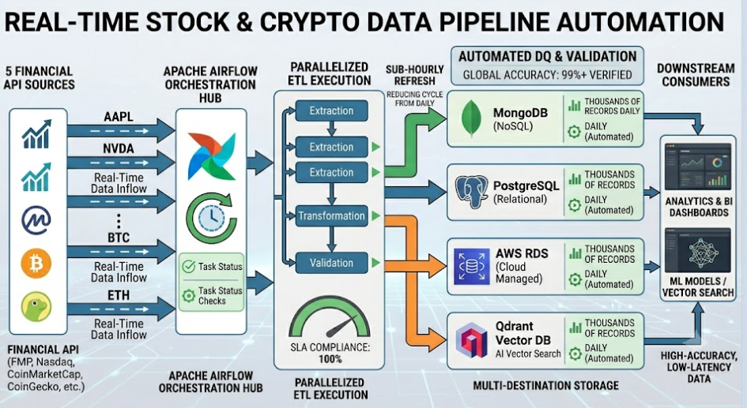

Real-Time Stock & Crypto Data Pipeline Automation
Apache Airflow-orchestrated pipeline ingesting real-time stock and crypto data from 5 financial APIs (FMP, Nasdaq, CoinMarketCap, CoinGecko, and more) — with parallelized ETL execution across extraction, transformation, and validation stages.
- Reduced data refresh cycles from daily to sub-hourly with zero manual intervention
- Multi-destination storage across MongoDB, PostgreSQL, AWS RDS, and Qdrant Vector DB — processing thousands of financial records daily
- Automated data quality monitoring across 4 production systems — 99%+ accuracy verified for downstream analytics and ML vector search
- Optimized Airflow task scheduling achieving 100% SLA compliance on real-time financial pipelines
High-accuracy, low-latency data powering Analytics & BI dashboards and ML models.